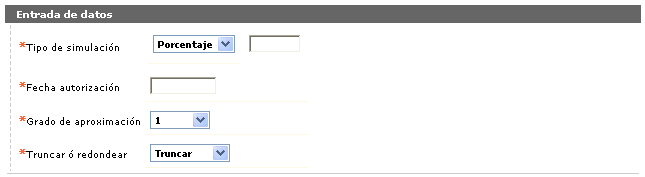
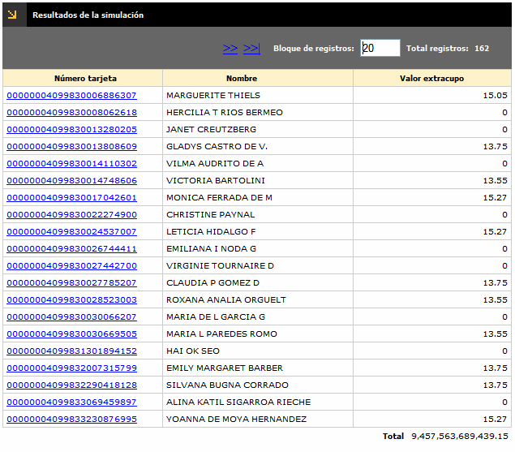
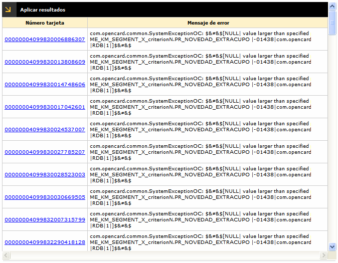

Segmentación de tarjetas
Extracupo: Invoca una pantalla que posibilita incrementar un valor o un porcentaje al valor del extracupo de las tarjetas o créditos que hagan parte de la lista, definiendo además, la fecha de autorización y grado de aproximación al valor de la variación, o simplemente realizar una simulación de dicha variación.
La opción cuenta con un wizard de tres pasos: Entrada de datos, Resultados de la simulación, y Aplicar resultados.

|
Tipo simulación |
Campo obligatorio que permite determinar si el aumento del extracupo se realiza con base en un porcentaje o en un valor adicional. |
|
Fecha autorización |
En este campo obligatorio el usuario establece la fecha, en formato YYYY-MM-AA, en la cual se aplica el aumento. |
|
Grado de aproximación |
Campo obligatorio tipo combo del cual se puede seleccionar la manera como se calculará el extracupo del producto. |
|
Truncar o redondear |
Este campo obligatorio tipo combo permite seleccionar entre Truncar y Redondear, la acción que debe tener en cuenta el sistema para realizar el cálculo del extracupo, a partir del múltiplo seleccionado en el campo anterior. |
Resultados de la simulación: Muestra el valor del aumento del extracupo que resulte de aplicar la variación a las tarjetas o créditos de la lista, según los datos ingresados en el formulario anterior. Permite que estos valores sean aplicados o no.

Aplicar resultados: Este formulario muestra aquellas tarjetas o créditos que hayan presentado algún error en el momento de aumentar el extracupo.
